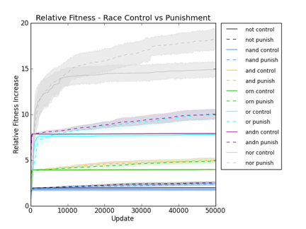
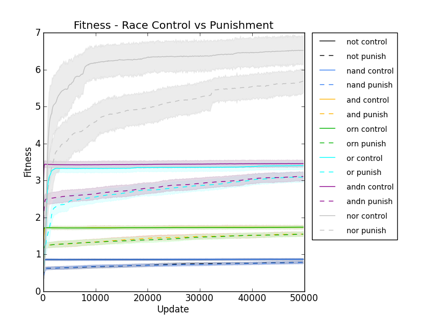
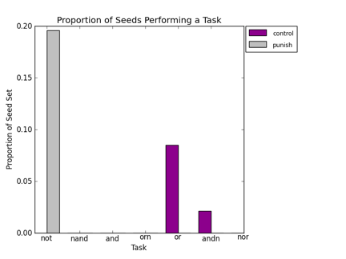

STATUS:
Running Competitions Between Organisms with Unequal Fitness...
9 messagesRosangela Canino-Koning <voidptr@gmail.com>
Thu, May 24, 2012 at 2:20 PM
Reply-To: rosiec@voidptr.net
To: Bryson David <dmbryson@gmail.com>, Charles Ofria <charles.ofria@gmail.com>
So, I'm looking for some advice on how to normalize the effect of gestation time between a couple of organisms I'm trying to compete to test their evolvability.
Both organisms are the same fixed length, and perform the same tasks (and thus get the same rewards for those), but have unequal gestation times, and thus unequal fitness. So, predictably, when I try to compete them, the one with the shorter gestation time (and thus the higher fitness) generally wins the competitions, mostly regardless of the tasks I set out for them to do. I was wondering if you had any suggestions for how to make them be on an equal footing for the competitions. I don't want to edit the organisms to make them equal fitness because that would disturb the genetic background, which is critical to the point of the whole experiment.
Is there some section of the code I should be looking at, or is there some configuration option that I missed to do this? Any advice would be appreciated.
-rose
Charles Ofria <charles.ofria@gmail.com>
Tue, May 29, 2012 at 1:26 AM
To: rosiec@voidptr.net
Cc: Bryson David <dmbryson@gmail.com>
Do you need to compete them directly against each other, or would it be acceptable for them to each have their own population and see how quickly fitnesses rise? If the later, you can run them for a fixed number of generations.
The other option would be to make it so that there are two different divide commands (divide-A and divide-B?), each costing a different number of CPU cycles. Make it so that the divides cannot mutate in (weight of zero), which should normalize things. It will have a minor effect on evolvability, but less than any of the other options I came up with.
I'll keep thinking about it.
Cheers,
--- Charles
Rosangela Canino-Koning <rosiec@voidptr.net>
Tue, May 29, 2012 at 11:27 AM
To: Charles Ofria <charles.ofria@gmail.com>
What I arrived at was separate runs as races (timing to see which population gets a task first), which should get at the question.
Thx :)
-r
David Michael Bryson <dmbryson@gmail.com>
Thu, May 31, 2012 at 3:09 PM
To: Charles Ofria <charles.ofria@gmail.com>
Cc: rosiec@voidptr.net
I have been thinking about this as well, and I think Charles suggestion of running them for a fixed number of generations sounds the most promising. Pretty much anything that adjusts for the gestation time will introduce a bias for or against a particular genotype. Assessing the rise in fitness independently eliminates the need to bias. The starting fitness of each genotype sets a unique reference point and then you can just compare the (final fitness / reference fitness) ratios between genotypes.
David
Rosangela Canino-Koning <rosiec@voidptr.net>
Thu, May 31, 2012 at 3:11 PM
To: David Michael Bryson <dmbryson@gmail.com>
Cc: Charles Ofria <charles.ofria@gmail.com>
Interesting. Thanks.
-r
Rosangela Canino-Koning <rosiec@voidptr.net>
Fri, Jun 1, 2012 at 1:09 AM
To: David Michael Bryson <dmbryson@gmail.com>
Cc: Charles Ofria <charles.ofria@gmail.com>
So, the bit about evolving for a fixed number of generations seems promising, but the end result I'm looking for is not a rise in fitness, per se.
Maybe I'm thinking about this wrong, but it seems to me that fitness in this context is just a proxy for whether the organisms have acquired the new tasks (and thus how evolvable they are). I can look at task acquisition directly by looking at the task counts without resorting to fitness as a proxy.So, fitness ratios aren't really useful unless I am using them as some sort of starting point, which I can then use to somehow programmatically normalize generation time for head-to-head competitions. If I avoid head-to-head competitions by just measuring the amount of time till the evolution (and sweep) of a target task for a set of populations evolving in isolation, then I avoid the issue altogether.
Does that make sense? Am I missing something?
-rose
David Michael Bryson <dmbryson@gmail.com>
Fri, Jun 1, 2012 at 2:07 PM
To: Rosangela Canino-Koning <rosiec@voidptr.net>
Cc: Charles Ofria <charles.ofria@gmail.com>
I think that ideally you will want to look at both fitness and task success. I guess it depends on your specific aims. If you are looking at evolvability from an engineering standpoint of simply solving a computational problem, then task counts are may simply to be the most important. However, fitness is not just a proxy for task evolution, but rather it encompasses the efficiency of task performance as well as the ability of the organism to self-replicate. The efficiency component itself may be important from an engineering perspective. For example, a given pair of genotypes may be essentially equally capable of evolving to perform a given set of tasks. However, one of the genotypes in the pair may have an architecture that allows the evolved tasks to be computed faster and with less detriment to gestation time.
David
Rosangela Canino-Koning <rosiec@voidptr.net>
Fri, Jun 1, 2012 at 2:10 PM
To: David Michael Bryson <dmbryson@gmail.com>
Cc: Rosangela Canino-Koning <rosiec@voidptr.net>, Charles Ofria <charles.ofria@gmail.com>
Thanks! That's exactly the type of feedback I was looking for.
-r
Charles Ofria <charles.ofria@gmail.com>
Fri, Jun 1, 2012 at 3:04 PM
To: Rosangela Canino-Koning <rosiec@voidptr.net>
Cc: David Michael Bryson <dmbryson@gmail.com>
I agree completely. "Evolvability" is a vague term, and you typically need to specify context for it to be meaningful. If you're talking about evolvability in regards to the task, then that's all you want to look at. If you want to talk about the more general evolvability of the organism in this new environment, the fitness ration will tell you how quickly it manages to improve fitness. Ultimately, that is what the selective pressures are pushing for. None-the-less, sometimes you want to have a broader set of selective pressures to evolve a particular trait most effectively.
Cheers,
--- Charles
rosiec@Loki:/Volumes/rosiec/research/devolab_research/evolution_of_modularity/raw_data/088$ for j in control punish; do for i in and nand andn nor not or orn; do ls -1 *_$i"_"*""$j""*/data/average.dat | xargs python ../../../scripts/common/extract_single_column_to_csv.py -s " " 4 > $i"_"$j"_"fitnesses.csv ; done ; done
caninoko@dev-intel07:~/evolution_of_modularity/configs/088_Testing_Evolvability__Two_Input__Timing_Races/config_fitnesses/organisms$ for i in *; do seq=`cat $i`; echo PURGE_BATCH; echo LOAD_SEQUENCE $seq; echo RECALCULATE; echo DETAIL $i"__fitness.dat" fitness task.0 sequence; echo ; done > ../all_organisms_analyze.cfg
caninoko@dev-intel07:~/evolution_of_modularity/configs/088_Testing_Evolvability__Two_Input__Timing_Races/config_fitnesses$ for i in and nand andn nor not or orn; do ./avida -a -set ANALYZE_FILE all_organisms_analyze.cfg -set ENVIRONMENT_FILE environment_$i.cfg; mv data data_$i; done
rosiec@atlantis:~/research/devolab_research/evolution_of_modularity/raw_data/088$ mv config_fitnesses/data_not/control_intertwined_820007__last_common_ancestor.org__fitness.dat config_fitnesses/data_not/UNUSED__control_intertwined_820007__last_common_ancestor.org__fitness.dat rosiec@atlantis:~/research/devolab_research/evolution_of_modularity/raw_data/088/config_fitnesses$ for j in and nand andn nor not or orn; do cd data_$j; for k in control noreward punish; do for i in $k"_"intertwined_8200*; do tail -1 $i | cut -d " " -f1; done > $k"_"fitnesses.dat; done ; cd ../; done
rosiec@atlantis:~/research/devolab_research/evolution_of_modularity/raw_data/088$ for k in control punish; do for j in and nand andn nor not or orn; do paste -d "," config_fitnesses/data_$j/$k"_"fitnesses.dat $j"_"$k"_"fitnesses.csv > combined_seed_$k"_"$j"_"fitnesses.csv ; done; done
rosiec@atlantis:~/research/devolab_research/evolution_of_modularity/raw_data/088$ for k in control punish; do for j in and nand andn nor not or orn; do echo $k $j; python ../../../scripts/analysis/calculate_relative_fitness_increase.py combined_seed_$k"_"$j"_"fitnesses.csv > combined_seed_$k"_"$j"_"relative_fitness_ratios.csv ; done; done
rosiec@Loki:/Volumes/rosiec/research/devolab_research/evolution_of_modularity/raw_data/088$ python ../../../scripts/graph_generation/plot_from_csv.py --error --start_at 2 -o --xtick_multiplier 100 --xlim_max 499 --title "Relative Fitness - Race Control vs Punishment" --ylabel "Relative Fitness Increase" --xlabel "Update" --data_members 2 --legend "not control,not punish,nand control,nand punish,and control,and punish,orn control,orn punish,or control,or punish,andn control,andn punish,nor control,nor punish" relative_fitness_ratios.png *_not_*ratios.csv *_nand_*ratios.csv *_and_*ratios.csv *_orn_*ratios.csv *_or_*ratios.csv *_andn_*ratios.csv *_nor_*ratios.csv

OFRIA LAB MTG
STATUS:
rosiec@Loki:/Volumes/rosiec/research/devolab_research/evolution_of_modularity/raw_data/088$ python ../../../scripts/graph_generation/plot_from_csv.py --error --start_at 2 -o --xtick_multiplier 100 --xlim_max 499 --title "Relative Fitness - Race Control vs Punishment" --ylabel "Relative Fitness Increase" --xlabel "Update" --data_members 2 --legend "not control,not punish,nand control,nand punish,and control,and punish,orn control,orn punish,or control,or punish,andn control,andn punish,nor control,nor punish" relative_fitness_ratios.png not_*fitnesses.csv nand_*fitnesses.csv and_*fitnesses.csv orn_*fitnesses.csv or_*fitnesses.csv andn_*fitnesses.csv nor_*fitnesses.csv

rosiec@Loki:/Volumes/rosiec/research/devolab_research/evolution_of_modularity/raw_data/088/config_fitnesses/data_not$ mv UNUSED__control_intertwined_820007__last_common_ancestor.org__fitness.dat control_intertwined_820007__last_common_ancestor.org__fitness.dat rosiec@Loki:/Volumes/rosiec/research/devolab_research/evolution_of_modularity/raw_data/088/config_fitnesses$ for j in and nand andn nor not or orn; do cd data_$j; for k in control noreward punish; do echo $j > $k"_"task.dat ; for i in $k"_"intertwined_8200*; do tail -1 $i | cut -d " " -f2; done >> $k"_"task.dat; done ; cd ../; done rosiec@Loki:/Volumes/rosiec/research/devolab_research/evolution_of_modularity/raw_data/088/config_fitnesses$ for k in control noreward punish; do paste -d "," data_not/$k"_"task.dat data_nand/$k"_"task.dat data_and/$k"_"task.dat data_orn/$k"_"task.dat data_or/$k"_"task.dat data_andn/$k"_"task.dat data_nor/$k"_"task.dat > $k"_"tasks.csv; done
rosiec@Loki:/Volumes/rosiec/research/devolab_research/evolution_of_modularity/raw_data/088/config_fitnesses$ python ../../../../scripts/graph_generation/bar_chart_from_csv.py --has_header --groups 7 --xticks="not,nand,and,orn,or,andn,nor" --legend "control,punish" --columns "1,2,3,4,5,6,7" --pair --title "Proportion of Seeds Performing a Task" --ylabel "Proportion of Seed Set" --xlabel "Task" average_starting_tasks.png control_tasks.csv punish_tasks.csv
